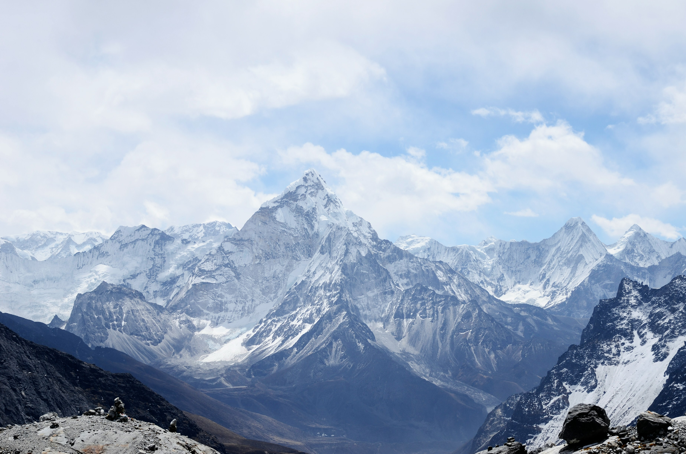

Easy
Troll Falls
Kananaskis · 3.6 km loop · a gentle walk to a waterfall.
Curated day hikes across the Alberta Rockies and foothills.
Browse trails
Explore Alberta Trails is a directory of hiking routes with up-to-date trail conditions, built by local guides.
Easy
Kananaskis · 3.6 km loop · a gentle walk to a waterfall.
Moderate
Canmore · 4.6 km loop · turquoise alpine lakes.
Hard
Canmore · 7.6 km return · steep climb, big views.
Plan around the Canmore trailheads and check current conditions before heading out.
The map is not loaded until you choose to view it. OpenStreetMap will receive your connection details when it loads.
Map provided by OpenStreetMap. Open the map in a new tab.
Current conditions near Canmore, Alberta
Loading current weather…
Weather by Open-Meteo. Your browser contacts its service to retrieve this forecast; no API key is used.
Most trails in Kananaskis and Banff require a valid pass, sold online or at trailhead kiosks.
Yes, most trails allow leashed dogs. A few alpine routes recommend leaving pets at home.
Questions or trail suggestions? Email us at hello@explorealbertatrails.ca